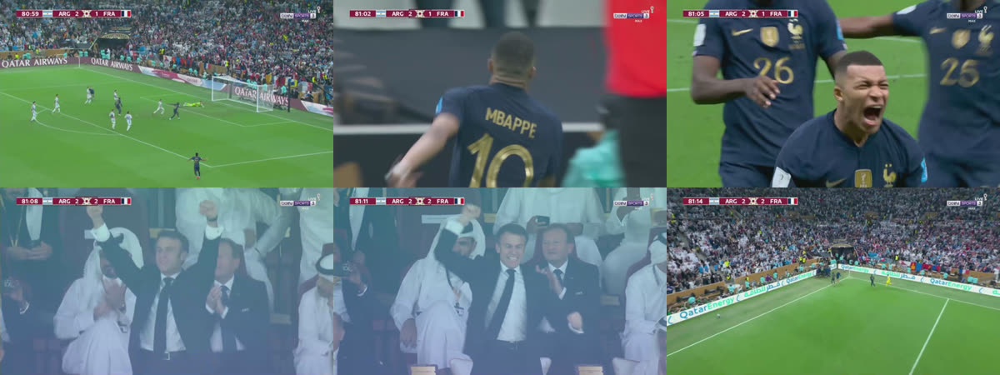

The match,
in its own words.
A football broadcast, read back line by line. The score bug anchors the goal, the tracker reads the play, and a small language model writes the call. This is the programme for the match it called.

From the commentary box
The first rule of the system is that the language model never decides the score. The score bug does. The tracker supplies the play. The model is only allowed to find the words for facts that are already on the sheet.
That separation is what makes the programme readable. When the call says France have equalised, there is a timestamp, a score flip and a tracked move behind it. When it says nothing, that is a fact too.
“France make it 2–2. The ground is up.”
The result is not a replacement for a commentator. It is a matchday artefact: a record of what the system saw, what it chose to say, and where it stopped.
own match.
any football video
Drop a clip · set the score · hear it back
Also in this issue
Two ways in. The video pipeline sees the play; a real API-Football feed knows the event. The API example — LD Alajuelense 1–0 Perez Zeledon, 90′, A. Hernandez — runs through the same language and voice stack and returns the correct team, player and score.
The API line
“Goal! A. Hernandez (LD Alajuelense) latches on to a precise pass inside the box and unleashes a shot into the left side of the goal. The score is 1:0.”